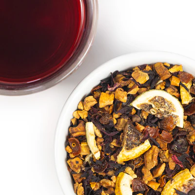

Shop Herbal Coffee
French Vanilla, Roasts & More
Explore a variety of herbal coffee blends and accessories crafted for every taste and lifestyle.
Our Product Catalog
- Loose Leaf Blends: Discover rich, full-bodied blends for a customizable brewing experience.
- Tea Bags: Convenient and eco-friendly options for brewing herbal coffee on the go.
- Sample Bundles: Try a variety of flavors to find your favorite blend.
- Accessories: Enhance your brewing with mugs, reusable filters, and more.
A World of Flavorful Coffee Alternatives
Discover a new way to enjoy your morning cup with Sip Herbals. Our herbal coffee alternatives offer a rich, satisfying coffee experience without the caffeine jitters, acidity, or other downsides often associated with traditional coffee. Explore our full range of products, including customer favorites like Faux Joe, available in various flavors and formats, from loose-leaf blends to plastic-free tea bags. Start sippin’ today and find your new favorite coffee alternative!
Our goal is to provide a variety of options for every taste and lifestyle. Whether you're looking for seasonal favorites or a daily staple, our full selection has something for everyone. Our All Products collection features our entire line, including loose-leaf blends, tea bags, sample bundles, and accessories to enhance your herbal coffee experience.
Sample Bundles
New to herbal coffee? Our Sample Bundles are a great way to try a range of flavors before committing to a full-size option. These bundles are perfect for exploring our offerings, from seasonal treats to best-sellers like French Vanilla and Dirty Chai. Featured on Shark Tank, these bundles make thoughtful gifts for anyone curious about caffeine-free alternatives.
Loose Leaf Blends
Our Loose Leaf collection brings the richness of herbal coffee to your cup with customizable brewing options. Available in classic flavors and unique blends, each loose-leaf option allows you to enjoy the full-bodied taste and health benefits of our premium ingredients, including chicory root, dandelion, and carob. Simply brew with your favorite coffee maker or french press and experience a coffee alternative that’s free from acidity, caffeine, and unnecessary additives.
Tea Bags
Our plastic-free Tea Bags make it easy to enjoy Faux Joe on the go or at home without a coffee maker. Available in popular flavors like Cinnamon Roll and Dirty Chai, each tea bag delivers the same comforting flavor in a convenient, eco-friendly format. Simply steep and sip for a caffeine-free coffee experience that’s smooth, aromatic, and beneficial for your body.
Popular Products
French Vanilla
A smooth and creamy blend, perfect for any time of day.
Dirty Chai
A spicy, aromatic blend that combines chai spices with herbal coffee goodness.
Cinnamon Roll
A sweet and spiced flavor reminiscent of a freshly baked cinnamon roll.
Featured Product: Loose Leaf Bundles
Our Loose Leaf Bundles offer the perfect way to explore multiple flavors. Create your personalized bundle and enjoy a diverse range of herbal coffee experiences.
